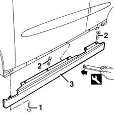

7055A30 l/h or r/h side rubbing strip (one) - r+r
- Path
- Procedures > 70 FITTINGS > 7055 MOULDINGS ON PROTECTIONS > 7055A EXTERIOR MOULDINGS > 7055A30 l/h or r/h side rubbing strip (one) - r+r
- Kind
- repair procedure (removal / refitting; the operation number is the code)
- Applies to
- all engines; all production periods
- Interactive page
- https://sloeber94.github.io/elrnDB-fMltpl/en/#/2892258
Applies to: all engines; all production periods
 Removing
Removing
 Refitting
RefittingRaise the side of the car.
1. Undo the lower fixing bolts.
2. Open the doors and undo the top attachment bolts.
3. Remove the miniskirt from the internal retainers using the special tool.
 | Name | Country |
|---|---|---|
3 | Scraper blade | 1.878.077.000 |

Applies to: all engines; all production periods
Refitting
RemovingCheck that the miniskirt is undamaged.
Fit the miniskirt on the retainers.
Tighten the top and bottom bolts.
Lower the vehicle.